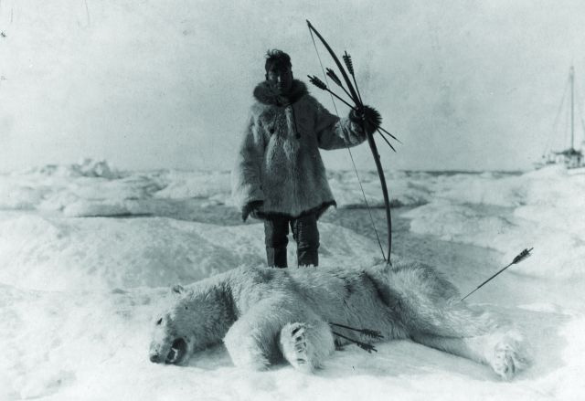
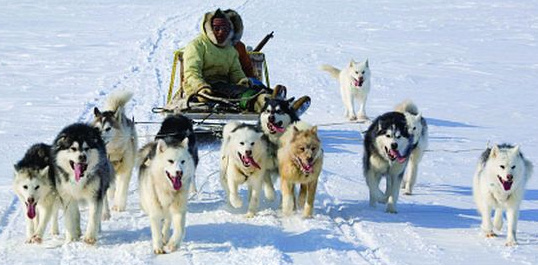

Eskimi: Neobični zimski ljudi
Eskimi žive u malim, složnim zajednicama i pretežno se bave lovom. Od davnina su se naučili prilagoditi teškim i hladnim uvjetima života koji ne obiluju ni klimatskim pogodnostima ni osebujnim prehrambenim repertoarom. No, to nipošto ne znači da će Eskim ostati gladan ili da se neće znati ugrijati
Nema zime za Eskime! Ovaj poznati izraz je posve na mjestu. Ti neobični ljudi s hladnog sjevera ne mogu se smrznuti čak ni kad su najniže temperature, jer su utopljeni krznom ili kožom svoje lovine. Područje na kojem obitavaju obuhvaća morske obale arktičke i subarktičke regije, sjeverne Amerike i sjeveroistočnog Sibira.
Male zajednice Eskima žive nomadskim načinom života. Pretpostavlja se da imaju zajedničke korijene sa sjeverno-američkim Indijancima, a njihovo prvo pojavljivanje datira 2.000 godina prije Krista. Danas ih ukupno ima oko 90.000. U svijetu su poznati pod imenom Eskimi, koje potječe iz indijanskog jezika, a znači onaj koji jede sirovo meso, no, oni sebe nazivaju Inuitima, što znači ljudi.
Eskimski psi
Kad love na kopnu, služe se sankama u koje su upregnuti eskimski psi. Porijeklo tih pasa seže u daleku prošlost od prije 35.000 godina kad su psi iz sibirskog podneblja bili križani s arktičkim vukovima. Ti psi oduvijek su bili uz ljude sa sjevera, a glavna im je zadaća olakšati život svojim ljudskim vlasnicima. I prije nego što su izmišljene sanke, ti su psi lovili s Eskimima, a oni su ih počeli dresirati u skladu s vlastitim potrebama.
Ovi psi su veoma izdržljivi, a služe uglavnom za prijevoz i pomoć prilikom lova, jer njuhom otkrivaju rupe u ledu koje tuljani koriste za disanje, ili pak ulovljene životinje prenose do odredišta i sl.